Its own bootloader
It reads the system image, checks its signature and every block, and shows why it refused one that fails.
What works today, and what Freally OS 1.0 will have.
Every number on this page comes from the build that produced it. There is nothing to download before version 1.0.
Every figure is counted from the app itself. Nothing is estimated, and nothing is rounded up.
Freally OS is free today, for everyone: no paid tier, no subscription and no account. Its code is open source under the Apache License 2.0.
It reads the system image, checks its signature and every block, and shows why it refused one that fails.

Memory where nothing is both writable and runnable, interrupts and timers, a scheduler with four classes, and messages between programs.

Conductor starts as process 1, from the signed image, in its own protected memory.

A program that crashes ends alone and leaves a report. Even a kernel stop is reported when the computer next starts.

The Rack along the bottom with app keys and a clock, a launcher on the Super key, and windows in light and dark.

A command line with its own shell: every process, the boot's times, the log and memory, a command away.
Every process and what it's for, the boot stage by stage, every crash and the log, on Super+M.

Every processor core runs, each with its own queue, and one with nothing to do takes work from a busy one.

FreallyFS: copy-on-write, a checksum on every block, snapshots, and each home encrypted with its own key. Cut off mid-write 1,000 times in tests, it came back whole every time.
The first start makes the owner's account; the password opens that person's home and nobody else's. An account moves to another computer as one sealed file.
Settings for your look, accounts, updates and a hardware report. Files for your home, with a bin, dragging between windows, and copies you can pause and check.
A signed update goes onto the half of the system that isn't running and starts on trial. If it doesn't start, the computer goes back to the version before by itself.

Exact decimals: 0.1 + 0.2 is 0.3, and a third shows 32 digits. Standard and scientific, typed or pressed, with a history.

In developer builds a running service can be replaced, and put back, without a restart. Release builds don't carry it.
Freally OS 1.0 next to the desktop systems most people use, each as its maker ships it.
| Feature | Freally OS 1.0 | Windows 11 Home | macOS | Ubuntu Desktop | ChromeOS |
|---|---|---|---|---|---|
| Every line written by one author, to one charter | has it | does not | does not | does not | does not |
| Open source | has it | does not | partlyits core, Darwin, is | has it | partlyChromiumOS is; ChromeOS adds closed parts |
| Set up without an online account | has it | does notsetup asks for a Microsoft account | has itan account is optional | has it | partlyguest mode only |
| A verified system that apps can't change | has it | partlyan administrator can change the system | has it | partlyan administrator can change the system | has it |
| Runs Windows apps | partlystandard apps, through its own layer | has it | does not | partlythrough an add-on | does not |
| Runs on a PC you already own | partlyPCs it has drivers for | has it | does notApple computers only | has it | partlysupported PCs, with ChromeOS Flex |
Only Freally OS is written entirely by one author, to one charter. That is what lets it explain every process and promise there is nothing in it from anyone else.
Windows, macOS, Ubuntu and ChromeOS run far more apps on far more hardware, today and at Freally OS 1.0. Freally OS trades that breadth for being consistent, quiet, sealed and explained.
Freally OS's column is version 1.0, which is not out yet. The other systems change too; this table is as of November 2026.
Every official build is one signed image. Before anything in it runs, the bootloader checks the signature and every block. An image that fails is never run, and the screen says why.
Each app runs in its own sandbox with only the permissions it was given. The system itself changes only with a new signed image.
The code is open source, and the builds are reproducible: build the official image yourself and check that it's identical.
No library from outside the project, and a build check refuses one. The only exceptions are Rust's core library and the Noto fonts, both listed in the notices.
Stated plainly. Freally OS is built one version at a time, and most of it isn't built yet. Each version on the road to 1.0 is marked with its state.
There are no downloads before version 1.0, and none on this page.